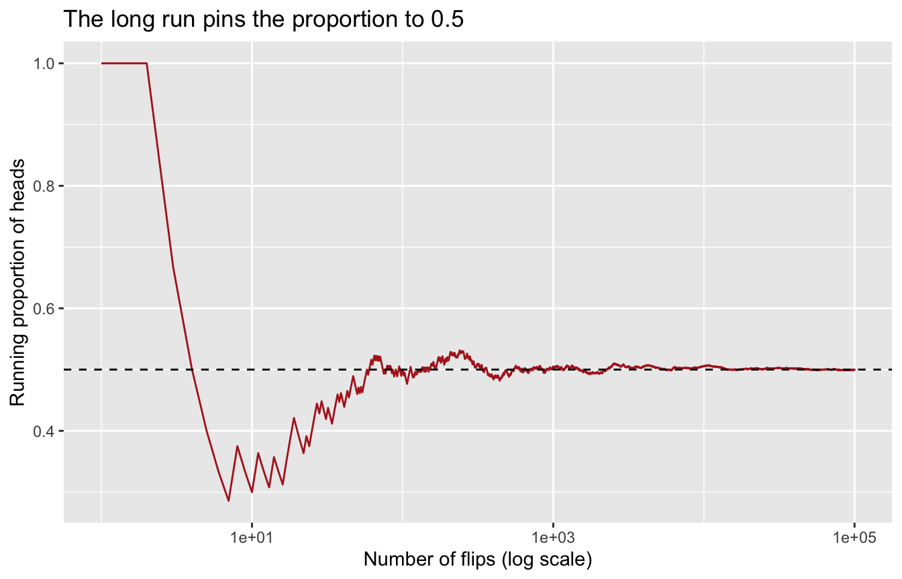
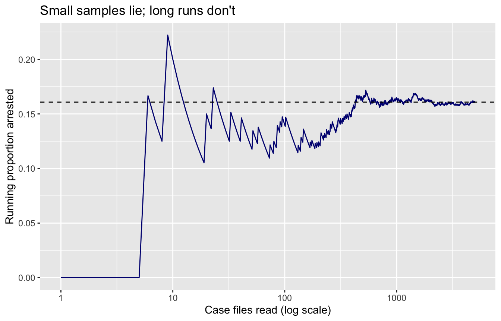

Demo Walkthrough · Session 3
Probability, via simulation — and a first look at Bayes’ theorem
What this page is. The Session 3 lecture demos, written down step by step. Every chunk below is self-contained — copy any of them into your own R session and they run as-is. Use this page to catch up after a missed class, or to re-run what happened on screen at your own pace.
What you’ll build
- A demonstration that a probability is a long-run proportion — on coins, then on 30,000 real Chicago incidents
- The binomial distribution, discovered by simulation before you ever see
dbinom() - Contingency tables: joint, marginal, and conditional probability on real data
- The conditioning move — shrink the world, re-proportion — run in both directions
- Bayes’ theorem as a counting exercise, and a simulation that proves the surprising answer
Setup
Everything below needs only the tidyverse and the course’s anchor dataset:
1 · A probability is a long-run proportion
The claim: a fair coin lands heads with probability 0.5. Don’t take it on faith — flip:
[1] "heads" "heads" "heads" "tails" "tails" "tails" "heads" "tails" "heads"
[10] "heads"mean(flips == "heads")[1] 0.6Ten flips bounce around. replicate() repeats the whole recipe — here, six more batches of ten:
[1] 0.6 0.1 0.5 0.6 0.6 0.7None of the batches is entitled to land exactly on 0.5. Now watch what happens as the run gets long:
lln <- tibble(flip = sample(c(1, 0), size = 100000, replace = TRUE)) |>
mutate(n_flips = row_number(),
running_prop = cummean(flip))
ggplot(lln, aes(n_flips, running_prop)) +
geom_line(color = "firebrick") +
geom_hline(yintercept = 0.5, linetype = "dashed") +
scale_x_log10() +
labs(title = "The long run pins the proportion to 0.5",
x = "Number of flips (log scale)", y = "Running proportion of heads")
Wobbly early, pinned eventually. A probability is the value the long-run proportion settles on.
The same thing, on real data
Each of the 30,000 Chicago incidents either ended in arrest or didn’t — 30,000 recorded trials:
mean(crimes$arrest)[1] 0.1608(arrest is TRUE/FALSE; mean() of a logical is the proportion of TRUEs — you’ll use this trick constantly.) And the long run works here too — read case files one at a time, tracking the running proportion:
running <- tibble(arrest = sample(crimes$arrest, size = 5000)) |>
mutate(n_cases = row_number(),
running_prop = cummean(arrest))
ggplot(running, aes(n_cases, running_prop)) +
geom_line(color = "navy") +
geom_hline(yintercept = mean(crimes$arrest), linetype = "dashed") +
scale_x_log10() +
labs(title = "Small samples lie; long runs don't",
x = "Case files read (log scale)", y = "Running proportion arrested")
2 · The binomial, discovered by simulation
Session 3’s toast restaurant: each dropped order is six pieces of toast, each landing topping-down or topping-up. rbinom() compresses “drop six pieces and count the downs” into one call — here are 100 dropped orders:
# A tibble: 7 × 2
jelly_down n
<int> <int>
1 0 1
2 1 8
3 2 23
4 3 32
5 4 22
6 5 13
7 6 1Run it again and the counts change — that’s sampling variability, and 100 trials is a shortish run. So make the run long, and compare against the theoretical binomial probabilities:
# A tibble: 7 × 4
jelly_down n simulated theoretical
<int> <int> <dbl> <dbl>
1 0 1543 0.0154 0.0156
2 1 9645 0.0964 0.0937
3 2 23336 0.233 0.234
4 3 31036 0.310 0.312
5 4 23365 0.234 0.234
6 5 9425 0.0942 0.0937
7 6 1650 0.0165 0.0156At 100,000 trials the two columns agree to within a few thousandths. Theory is the long run; simulation is how we watch the long run.
3 · Contingency tables on real data
Two classifications per incident — crime category and arrest — cross-counted:
crimes |>
count(crime_category, arrest) |>
pivot_wider(names_from = arrest, values_from = n)# A tibble: 3 × 3
crime_category `FALSE` `TRUE`
<chr> <int> <int>
1 Other 7867 2614
2 Property 9615 756
3 Violent 7694 1454Joint probability: divide every cell by the grand total.
# A tibble: 6 × 4
crime_category arrest n p
<chr> <lgl> <int> <dbl>
1 Other FALSE 7867 0.262
2 Other TRUE 2614 0.0871
3 Property FALSE 9615 0.320
4 Property TRUE 756 0.0252
5 Violent FALSE 7694 0.256
6 Violent TRUE 1454 0.0485Marginal probability: collapse one classification.
4 · Conditioning: shrink the world, re-proportion
The lecture’s restaurant work schedule, computed live. The question “Bill is your server — what day is it?” rules out every other server, so: isolate Bill’s column, re-scale it to sum to 1.
hours <- tribble(
~day, ~Anne, ~Bill, ~Calvin, ~Devon,
"Monday", 6, 0, 5, 8,
"Tuesday", 0, 6, 6, 0,
"Wednesday", 8, 5, 0, 8,
"Thursday", 4, 6, 5, 8,
"Friday", 8, 8, 5, 8,
"Saturday", 8, 10, 8, 8,
"Sunday", 0, 3, 6, 0
)
hours_long <- hours |> pivot_longer(-day, names_to = "server", values_to = "hours")
hours_long |>
filter(server == "Bill") |>
mutate(p_day_given_bill = hours / sum(hours)) |>
arrange(desc(p_day_given_bill))# A tibble: 7 × 4
day server hours p_day_given_bill
<chr> <chr> <dbl> <dbl>
1 Saturday Bill 10 0.263
2 Friday Bill 8 0.211
3 Tuesday Bill 6 0.158
4 Thursday Bill 6 0.158
5 Wednesday Bill 5 0.132
6 Sunday Bill 3 0.0789
7 Monday Bill 0 0 Same move, other direction — “it’s Monday; who’s serving?”:
# A tibble: 4 × 4
day server hours p_server_given_monday
<chr> <chr> <dbl> <dbl>
1 Monday Anne 6 0.316
2 Monday Bill 0 0
3 Monday Calvin 5 0.263
4 Monday Devon 8 0.421Note the asymmetry: P(Saturday | Bill) and P(Bill | Saturday) are different questions with different answers. Hold that thought — it’s the whole reason Bayes’ theorem exists.
On real data, conditioning is just subset, then mean
# A tibble: 3 × 3
crime_category p_arrest n
<chr> <dbl> <int>
1 Violent 0.159 9148
2 Other 0.249 10481
3 Property 0.0729 10371Knowing the category moves the arrest probability → the variables are dependent. And the famous trap:
# A tibble: 1 × 2
p_arrest n
<dbl> <int>
1 0.971 919Is Chicago spectacular at solving drug crimes? No — a narcotics record usually exists because someone was arrested. Conditional probabilities describe the data-generating process, not just the world.
Independence is what it looks like when conditioning doesn’t move the number:
5 · Bayes’ theorem: count it out, then simulate it
The Ianfluenza screening problem: prevalence 1%, sensitivity .90, specificity .95. The brochure advertises P(test + | sick) = .90. You, in the exam room, want the reversed conditional: P(sick | test +). Count 1,000 people:
tribble(
~status, ~test_pos, ~test_neg, ~total,
"Sick", 9, 1, 10,
"Healthy", 50, 940, 990,
"Total", 59, 941, 1000
)# A tibble: 3 × 4
status test_pos test_neg total
<chr> <dbl> <dbl> <dbl>
1 Sick 9 1 10
2 Healthy 50 940 990
3 Total 59 941 10009 / (9 + 50) # P(sick | test +)[1] 0.1525424About 15% — because the false alarms from the huge healthy pool swamp the true positives. If that seems impossible, apply Session 3’s rule: don’t take a probability claim on faith — simulate it and watch it happen.
sim <- tibble(
sick = sample(c(TRUE, FALSE), size = 100000, replace = TRUE,
prob = c(0.01, 0.99))
) |>
mutate(
test_pos = if_else(
sick,
sample(c(TRUE, FALSE), size = 100000, replace = TRUE, prob = c(0.90, 0.10)),
sample(c(TRUE, FALSE), size = 100000, replace = TRUE, prob = c(0.05, 0.95))
)
)
sim |>
filter(test_pos) |>
summarize(p_sick_given_pos = mean(sick), n_positive = n())# A tibble: 1 × 2
p_sick_given_pos n_positive
<dbl> <int>
1 0.158 5869100,000 simulated patients, filter to the positives, take the mean — the long run lands right on the counting-table answer. The base rate is never optional.
Try a variation
- In the long-run arrest plot, change
size = 5000tosize = 200. How wrong can the early running proportion be? - Re-run the binomial convergence with
prob = 0.7(a biased toast-dropper). Which outcome becomes most common? - In the screening simulation, raise the prevalence from
0.01to0.20(a high-risk clinic). What happens to P(sick | +)? (This is the entire “priors matter” lesson in one edit.) - Find a
primary_typewhere P(arrest | type) is lower than the overall arrest rate. What might that say about how those records enter the data?